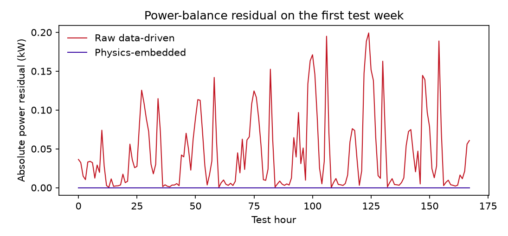
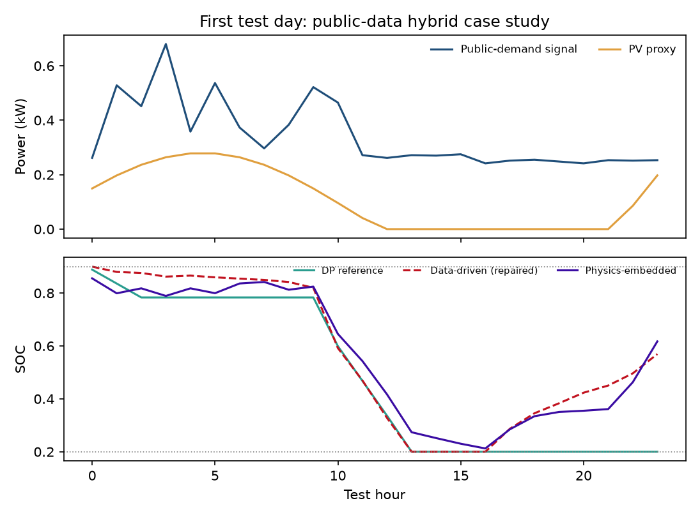
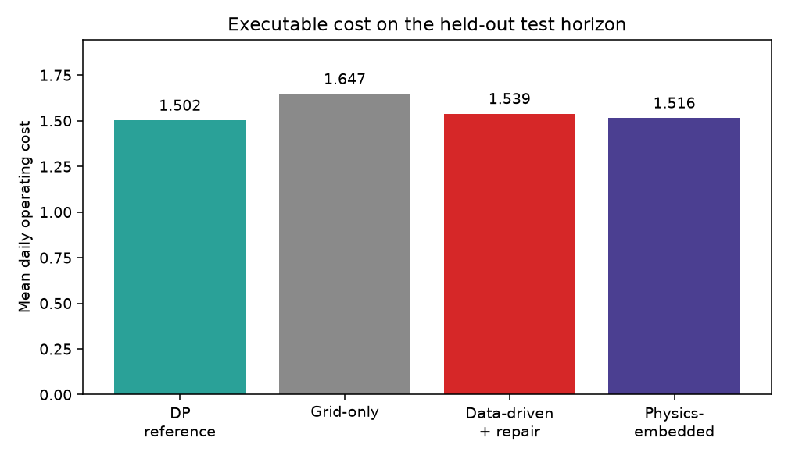

دانشگاه بناب · علوم کامپیوتر · شهریور ۱۴۰۵
جلسه دفاع پروژه کارشناسی
یادگیری فیزیکآگاه با قیود سخت برای مدیریت انرژی ریزشبکه متصل به شبکه
مقیاس کار: یک خانه با بار، فتوولتائیک، باتری و یک اتصال شبکه — نه یک ریزشبکه میدانی
استاد راهنما
دکتر بابک آذرنوید
سلام کوتاه، عنوان را کامل بخوانید، و همان اول بگویید مقیاس خانه است تا انتظار داور تنظیم شود. شماره دانشجویی را لازم نیست بلند بگویید.
نقشه ارائه
از مسئله تا نتیجه، در هفت ایستگاه
۱. مسئله
خانه متصل به شبکه و قیود باتری
۲. شکست شبکه آزاد
خطای کم، فرمان ناممکن
۳. روش
فرمان علامتدار + لایه سخت
۴. مرجع
برنامهریزی پویا، نه بهینه پیوسته
۵. آزمایش
۳۲۸۹ ساعت، پنج بذر، آزمون بازگشتی
۶. نتیجه
نقض صفر؛ هزینه نزدیک DP نه بهتر از آن
۷. حد ادعا
این PINN حل PDE نیست و به میدان تعمیم داده نمیشود.
این اسلاید فهرست است. بیش از ۳۰ ثانیه نمانید. بگویید آخر ارائه به «چه چیزی ادعا نمیکنیم» برمیگردیم.
چگونه از این فایل استفاده کنید
ارائه، تمرین، درسنامه
دفاع
یادداشت خاموش. حدود ۲۵ تا ۳۵ دقیقه روی اسلایدهای اصلی تا «پرسشها». پشتیبان را نشان ندهید مگر بپرسند.
تمرین
کلید N. هر اسلاید را بلند بگویید. جواب داور همان کادر طلایی است.
مطالعه
کل درسنامه را ورق بزنید. بخش مخزن و پرسشپاسخ را کامل بخوانید. PDF همین محتواست.
کلیدها: فاصله بعد · N یادداشت · F تمامصفحه · ? راهنما
این اسلاید را در جلسه دفاع رد کنید.
نقشه درسنامه
نه بخش
- سامانه و قیود
- چرا شبکه آزاد میشکند و نسبت این کار با PINN
- لایه سخت با مثال عددی
- مرجع DP و حریصانه
- دو شبکه، آموزش، شاخص
- داده و درخت مخزن
- نتایج
- پرسش و پاسخ داور
- برگه اعداد و منابع
در دفاع فقط ۱، ۲، ۳، ۶، ۷ و حد ادعا را بگویید.
واژهنامه کوتاه
قبل از فرمولها
| واژه | معنی در این گزارش |
|---|
| وضعیت شارژ (SOC) | نسبت انرژی ذخیرهشده به ظرفیت نامی باتری |
| قابل اجرا | خروجی روی مدل باتری تعریفشده اعمالشدنی است |
| جریمه نرم | نقض قید با ضریب در زیان؛ تضمین صفر ندارد |
| قید سخت | قید در خود نگاشت خروجی |
| دوره | یک عبور کامل از مجموعه آموزش |
| دسته | تعداد نمونه در یک گام آدام؛ اینجا ۶۴ |
| آزمون بازگشتی | SOC ورودی هر ساعت از خروجی خود مدل میآید |
| بذر | مقداردهی تصادفی؛ پنج بذر فقط آموزش را عوض میکنند |
اگر داور اصطلاح انگلیسی گفت، فارسیاش را بگویید بعد مخفف.
یک جمله
اگر شبکه عصبی توان شبکه، شارژ، دشارژ و وضعیت شارژ را جداگانه بدهد، حتی با خطای کم ممکن است فرمانی بسازد که روی باتری قابل اجرا نباشد.
راهحل این گزارش: شبکه فقط فرمان علامتدار باتری را بیاموزد؛ بقیه کمیتها از فیزیک مدل درآیند.
این پیام را دو بار در جلسه بگویید: اول و آخر. داور باید همین را به خاطر بسپارد نه جدولها را.
فصل ۱ · سامانه
خانه متصل به شبکه، نه محله
چهار جزء
- بار محلی \(P_{\mathrm{L}}\)
- فتوولتائیک \(P_{\mathrm{PV}}\)
- باتری با وضعیت شارژ \(s\)
- یک نقطه تبادل با شبکه \(P_{\mathrm{G}}\)
تصمیم هر ساعت
باتری شارژ شود یا دشارژ، و کمبود یا مازاد چگونه با شبکه بسته شود. ولتاژ، فرکانس و حفاظت خارج از قلمرو است.
کلمه ریزشبکه در عنوان هست؛ اینجا اصلاحش کنید. بگویید «واحد خانگی متصل به شبکه». منبع مفهومی: Oladejo 2019 فقط برای آشنایی با مسئله، نه نظریه بازی.
قرارداد علامت
خروجی تصمیم چهار تاست
\(P_{\mathrm{G}}>0\) خرید از شبکه، \(\quad P_{\mathrm{G}}<0\) فروش، \(\quad P_{\mathrm{c}},P_{\mathrm{d}}\ge 0\)
\(P_{\mathrm{G}}\)
توان خالص شبکه
\(P_{\mathrm{c}}, P_{\mathrm{d}}\)
شارژ و دشارژ، هر دو نامنفی
\(s(t+\Delta t)\)
وضعیت شارژ گام بعد
روی تخته یا لیزر این چهار تا را بشمارید. بعد بگویید مدل آزاد هر چهار تا را جدا میدهد و مدل ما فقط یکی را.
فصل ۲ · فیزیک
توازن توان
\[P_{\mathrm{G}}+P_{\mathrm{PV}}+P_{\mathrm{d}}=P_{\mathrm{L}}+P_{\mathrm{c}}\]
اگر برقرار نباشد، باقیمانده این است:
\[r_{\mathrm{G}}=P_{\mathrm{G}}+P_{\mathrm{PV}}+P_{\mathrm{d}}-P_{\mathrm{c}}-P_{\mathrm{L}}\]
صفر بودن \(r_{\mathrm{G}}\) یعنی تراز انرژی در همان ساعت برقرار است.
سمت چپ منبع، سمت راست مصرف. اگر داور پرسید سقف شبکه کجاست، بگویید در این مدل \(P_G\) آزاد است و توازن همیشه با شبکه بسته میشود؛ این محدودیت کار است نه حسن آن.
باتری
مدل انرژی گسسته، نه الکتروشیمی
\[s(t+\Delta t)=s(t)+\frac{\eta_{\mathrm{c}}P_{\mathrm{c}}\Delta t}{E_{\max}}-\frac{P_{\mathrm{d}}\Delta t}{\eta_{\mathrm{d}}E_{\max}}\]
حد ایمنی
\[0.20\le s\le 0.90,\quad 0\le P_{\mathrm{c}},P_{\mathrm{d}}\le 1\,\mathrm{kW}\]
قید انحصار
\[P_{\mathrm{c}}P_{\mathrm{d}}=0\]
باتری تکمبدله همزمان دو طرفه کار نمیکند.
\(E_{\max}=2\,\mathrm{kWh}\)، بازده هر طرف \(0.95\)، گام یک ساعت. دما و پیری نیست.
SOC را فارسی بگویید: نسبت انرژی ذخیرهشده به ظرفیت نامی. اعداد را از حفظ بگویید.
هزینه
خرید، فروش، و جریمه عبور از باتری
\[g_t=c_{\mathrm{b}}[P_{\mathrm{G}}]_{+}\Delta t-c_{\mathrm{s}}[-P_{\mathrm{G}}]_{+}\Delta t+\kappa(P_{\mathrm{c}}+P_{\mathrm{d}})\Delta t\]
تعرفه فرضی
کمباری \(0.16\)، عادی \(0.22\)، اوج \(0.34\)، آخر هفته \(0.20\)؛ فروش \(0.06\). قبض واقعی نیست.
\(\kappa=0.008\)
نماینده ساده استهلاک عبوری است، نه مدل پیری.
اگر پرسیدند واحد پولی چیست، بگویید مفروض و فقط برای مقایسه نسبی. منبع تعرفه مقاله نیست؛ پیوست الف.
چرا یادگیری؟
DP دقیق است، ولی برای هر افق دوباره حل میشود
برنامهریزی پویا
مرجع مقید و تفسیرپذیر. هزینه به شبکه حالت بستگی دارد. در این کار \(71\) نقطه SOC و \(41\) فرمان.
شبکه عصبی
پس از آموزش، یک گام حدود \(21.5\) میکروثانیه. اما خروجی آزاد لزوماً قابل اجرا نیست.
هدف اقتصادی این پروژه جایگزینی قطعی حلکننده نیست؛ تقریب سریع یک برنامه مرجع است.
عدد زمان DP حدود \(0.54\) ثانیه برای ۳۲۸۹ ساعت است. نگویید «شبکه از بهینهسازی بهتر است».
شکست مدل آزاد
چهار جور ناممکنی
توان منفی
\(P_{\mathrm{c}}<0\) یا \(P_{\mathrm{d}}<0\)
همزمانی
شارژ و دشارژ در یک ساعت هر دو مثبت
SOC خارج بازه
کمتر از \(0.20\) یا بیشتر از \(0.90\)
باقیمانده توازن
\(r_{\mathrm{G}}\neq 0\)
خطای تقریب کم، بهتنهایی گواه امکانپذیری نیست.
این اسلاید را به نتایج وصل کنید: مدل آزاد همین چهار تا را در آزمون نشان میدهد.
جریمه نرم در برابر قید سخت
فیزیک را کجا بگذاریم؟
جریمه نرم
نقض را با یک ضریب به زیان اضافه میکنند. خطا کم میشود، ولی حذف کامل نقض تضمین ندارد.
قید سخت
قید در خود خروجی است. در این کار لایه بدون وزن آموزشپذیر فرمان را به چهار کمیت مجاز مینگارد.
جریمه نرم روی همین معماری در این گزارش آموزش داده نشد؛ فقط انگیزه روش است.
اگر داور گفت پس با PINN نرم مقایسه کنید، صادقانه بگویید مقایسه تجربی نیست و محدودیت کار است.
سؤال محتمل داور
این کار PINN است؟
PINN رایج
- معادله دیفرانسیل
- باقیمانده در تابع زیان
- قید معمولاً نرم
این گزارش
- قوانین جبری ساعتی
- فیزیک در لایه خروجی
- قید سخت برای مدل باتری
- برچسب از DP
از خانواده یادگیری فیزیکآگاه است، اما PINN حل PDE نیست. نام دقیقتر: شبکه فیزیکتعبیهشده با قید سخت.
جمله را از حفظ بگویید. منابع: Raissi 2019، Karniadakis 2021 برای ایده؛ Lu 2021 و Chen 2024 برای قید سخت.
فصل ۳ · مدل پیشنهادی
شبکه یک عدد میدهد؛ فیزیک بقیه را میسازد
\[u(t)=P_{\max}\tanh\bigl(z(t)\bigr)\]
علامت \(u\) جهت است: مثبت شارژ، منفی دشارژ. قدر مطلق شدت توان است.
بازه تانژانت هیپربولیک در \(\pm 1\) باز است؛ فرمان دقیقاً به \(\pm P_{\max}\) نمیرسد و فقط نزدیک میشود.
z خروجی آزاد شبکه است. tanh را روی تخته یک اسکیس بکشید اگر وقت بود.
لایه سخت
سقف وابسته به SOC، سپس انحصار
\[\bar P_{\mathrm{c}}(s)=\max\Bigl(0,\min\bigl(P_{\max},\tfrac{(s_{\max}-s)E_{\max}}{\eta_{\mathrm{c}}\Delta t}\bigr)\Bigr)\]
\[\bar P_{\mathrm{d}}(s)=\max\Bigl(0,\min\bigl(P_{\max},\tfrac{(s-s_{\min})E_{\max}\eta_{\mathrm{d}}}{\Delta t}\bigr)\Bigr)\]
\[P_{\mathrm{c}}=\min([u]_{+},\bar P_{\mathrm{c}}),\qquad P_{\mathrm{d}}=\min([-u]_{+},\bar P_{\mathrm{d}})\]
اول ظرفیت باقیمانده جعبه SOC، بعد بریدن فرمان. از روی همین دو خط بگویید چرا همزمانی رخ نمیدهد: یکی از [u]+ و [-u]+ صفر است.
پس از فرمان مجاز
SOC بعد و توان شبکه
\[s(t+\Delta t)=s(t)+\frac{\eta_{\mathrm{c}}P_{\mathrm{c}}\Delta t}{E_{\max}}-\frac{P_{\mathrm{d}}\Delta t}{\eta_{\mathrm{d}}E_{\max}}\]
\[P_{\mathrm{G}}=P_{\mathrm{L}}+P_{\mathrm{c}}-P_{\mathrm{PV}}-P_{\mathrm{d}}\]
توازن با تعریف \(P_{\mathrm{G}}\) برقرار میشود. در این مطالعه سقف واردات یا صادرات گذاشته نشده است.
این همان جایی است که فیزیک «آسان» میشود. پنهان نکنید. بگویید اگر سقف اتصال باشد لایه باید عوض شود.
مثال عددی لایه سخت
یک ساعت مشخص
\(s=0.50\)، \(u=+0.40\,\mathrm{kW}\)، \(P_{\mathrm{L}}=0.80\)، \(P_{\mathrm{PV}}=0.30\)
\[\bar P_{\mathrm{c}}=\min\bigl(1,\tfrac{(0.90-0.50)\times 2}{0.95}\bigr)=0.842,\quad P_{\mathrm{c}}=\min(0.40,0.842)=0.40,\quad P_{\mathrm{d}}=0\]
\[s_{+}=0.50+\tfrac{0.95\times 0.40}{2}=0.69,\qquad P_{\mathrm{G}}=0.80+0.40-0.30=0.90\]
توازن: \(0.90+0.30+0=0.80+0.40\). انحصار برقرار است چون \(u>0\).
این را روی تخته هم میتوانید تکرار کنید. نشان میدهد لایه «یاد نمیگیرد»؛ حساب میکند.
مثال حدی
باتری خالی دشارژ نمیشود
\(s=s_{\min}=0.20\) و فرمان کامل دشارژ \(u=-1\):
\[\bar P_{\mathrm{d}}=\min\bigl(1,\tfrac{(0.20-0.20)\times 2\times 0.95}{1}\bigr)=0 \Rightarrow P_{\mathrm{d}}=0\]
همین برای \(s=0.90\) و \(u=+1\): سقف شارژ صفر است. فایل code/test_physics.py همین دو حد را assert میکند.
اگر گفتند اثبات نرمافزاری کجاست، همین تست است.
ترمیم مدل آزاد
پسپردازش فقط برای هزینه
\[u_{\mathrm{safe}}=\mathrm{clip}(\hat P_{\mathrm{c}}-\hat P_{\mathrm{d}},-P_{\max},P_{\max})\]
سپس همان لایه سخت. SOC مسیر ترمیم از دینامیک باتری میآید نه از خروجی چهارم شبکه.
نقضهای جدول امکانپذیری روی خروجی خام است. هزینه روی مسیر ترمیمشده است تا فرمان ناممکن ارزان به نظر نرسد.
تفاوت معماری: در PE لایه داخل مدل است و گرادیان روی tanh(z) است نه روی چهار خروجی آزاد.
چرا MAE شبکه با MAE فرمان یکی است؟
در برنامه انحصاری
اگر \(P_{\mathrm{c}}P_{\mathrm{d}}=0\) آنگاه \(u=P_{\mathrm{c}}-P_{\mathrm{d}}\) و
\[P_{\mathrm{G}}-P_{\mathrm{G}}^{\star}=(P_{\mathrm{c}}-P_{\mathrm{d}})-(P_{\mathrm{c}}^{\star}-P_{\mathrm{d}}^{\star})=u-u^{\star}\]
پس برای مرجع، بدونباتری، حریصانه و فیزیکتعبیهشده، \(\mathrm{MAE}(P_{\mathrm{G}})=\mathrm{MAE}(u)\). مدل آزاد خام انحصار ندارد و دو ستون فرق میکنند.
این نکته فصل ۴ است. اگر جدول را دیدند و پرسیدند «چرا دو عدد یکی است؟» همین را بگویید.
آموزش مدل پیشنهادی
زیان فقط روی فرمان است
\[\mathcal L_u=\frac1N\sum_{i=1}^N\left(\tanh(z_i)-\frac{u_i^\star}{P_{\max}}\right)^2\]
\(u^\star\) فرمان مرجع برنامهریزی پویاست. چهار خروجی فیزیکی بعد از لایه ساخته میشوند و در این زیان نیستند.
تفاوت با مدل آزاد: آن یکی MSE چهار مؤلفه استانداردشده را کمینه میکند.
مرجع
برنامهریزی پویا روی شبکه گسسته
\[V_t(s)=\min_{u\in\mathcal U(s)}\bigl\{g_t(s,u)+V_{t+1}\bigl(f(s,u)\bigr)\bigr\}\]
- حالت: SOC با گام \(0.01\) از \(0.20\) تا \(0.90\) — ۷۱ نقطه
- فرمان: ۴۱ مقدار روی \([-1,1]\) کیلووات
- شرط نهایی \(V_T(s)=0\)؛ ارزش اسقاط باتری نیست
پس مرجع، تقریب عددی افق کامل است نه بهینه پیوسته دقیق.
اگر گفتند «پس ۲٫۸٪ از چه چیزی؟» جواب: از همین مرجع گسسته، نه از بهینگی پیوسته ناشناخته.
کران نزدیکبین
سیاست حریصانه آینده را نمیبیند
در هر ساعت همان شبکه ۴۱ فرمانی را برمیگزیند که فقط \(g_t\) را کمینه کند.
رفتار
شارژ اکنون فقط هزینه است. انرژی آغازین تخلیه میشود و سیاست نزدیک بدونباتری میماند.
نتیجه آزمایش
هزینه \(45.099\) در برابر بدون باتری \(45.233\). ارزش باتری در این مسئله بینساعتی است.
این اسلاید پاسخ میدهد چرا MLP لازم است چیزی شبیه DP یاد بگیرد نه قاعده همانساعت.
دو شبکه
همهچیز یکسان، جز خروجی
| دادهمحور آزاد | فیزیکتعبیهشده |
|---|
| لایه پنهان | ۳۲ و ۳۲، تانژانت | همان |
| خروجی | چهار کمیت آزاد | یک \(z\)، سپس لایه سخت |
| زیان | MSE چهارتایی استاندارد | خطای فرمان |
| آزمون نقض | خروجی خام بازگشتی | خروجی پس از لایه |
| هزینه | فقط پس از نگاشت ایمنی | همان لایه، داخل مدل |
تأکید کنید هزینه مدل آزاد روی خروجی خام حساب نشده تا نقض پاداش نگیرد.
ورودی
دوازده ویژگی، با نگاهبهجلوی بیخطا
\[\mathbf x(t)=\bigl(\sin(2\pi h/24),\cos(2\pi h/24),d,P_{\mathrm{L}},P_{\mathrm{PV}},c_{\mathrm{b}},c_{\mathrm{s}},s,P_{\mathrm{L}}^{t+1},P_{\mathrm{PV}}^{t+1},P_{\mathrm{L}}^{t+3},P_{\mathrm{PV}}^{t+3}\bigr)\]
مقادیر \(t+1\) و \(t+3\) همان مقدار واقعی سریاند. این فرض میدان نیست؛ برای مقایسه آفلاین با DP است.
بعداً همین مدل بدون این چهار ورودی دوباره آموزش داده میشود.
نشت مرزی انتهای هر افراز را خودتان بگویید قبل از داور: چند نمونه پایانی میتواند ساعت بعد را ببیند، ولی برچسب آزمون در آموزش نیست.
پروتکل آموزش
افراز زمانی؛ آزمون در انتخاب مدل نیست
- آدام، دسته ۶۴، حداکثر ۴۵۰ دوره (عبور کامل از آموزش)
- توقف زودهنگام: ۵۵ دوره بدون بهبود اعتبارسنجی
- پنج بذر ۷، ۱۱، ۱۹، ۲۳، ۲۹ — فقط مقداردهی و ترتیب دسته
- آزمون بازگشتی: SOC ورودی از خود مدل میآید
دوره و دسته را اگر پرسیدند همان تعریف اسلاید را بگویید. انحراف معیار جدول پراکندگی آموزش است نه تغییر داده.
شبکه عصبی
چه چیزی داخل MLP است؟
- دو لایه پنهان ۳۲ واحدی، فعالساز تانژانت هیپربولیک
- وزنها با بازه \(\sqrt{6/(n_{\mathrm{in}}+n_{\mathrm{out}})}\)
- آدام: \(\beta_1=0.9\)، \(\beta_2=0.999\)، نرخ \(1.2\times 10^{-3}\)
- فقط نامپای؛ بدون تنسورفلو یا پایتورچ
- مدل PE روی خروجی خام \(z\) تانژانت میگذارد تا با \(u^\star/P_{\max}\) مقایسه شود
کد: code/mlp.py
نوآوری در MLP نیست؛ در لایه بعد از آن است. این را صریح بگویید.
ناهماهنگی آموزش و آزمون
Teacher forcing در برابر بازگشت
در آموزش، \(s\) ورودی از مسیر مرجع DP میآید. در آزمون بازگشتی، \(s\) از خود مدل میآید.
پس بخشی از شکاف هزینه میتواند از همین جابهجایی توزیع باشد، نه فقط از خطای یکگامی.
اگر داور گفت چرا به DP نمیرسید، اول این را بگویید، بعد گسستگی DP و افق کامل مرجع را.
نام لاتین teacher forcing را لازم نیست بگویید مگر بپرسند.
شاخصها
چه چیزی را گزارش میکنیم؟
دقت
MAE برای \(P_{\mathrm{G}}\)، فرمان \(u\) و \(s\). MSE چهارتایی بهخاطر ناهمواحدی در جدول اصلی نیست.
امکانپذیری
\(|r_{\mathrm{G}}|\)، نقض SOC، توان منفی، همزمانی
هزینه
جمع \(g_t\) روی ۶۵۹ ساعت آزمون، فقط برنامههای قابل اجرا
کرانها
DP پایین تفسیری؛ بدون باتری و حریصانه بالا
جدول دقت را «نزدیکی به DP» بخوانید نه کیفیت کنترل در میدان.
فصل ۴ · داده
مطالعه موردی ترکیبی، مقیاس خانه
| مؤلفه | چه شد | چه نیست |
|---|
| بازه | ۱۱ ژانویه ۱۷:۰۰ تا ۲۷ مه ۱۷:۰۰ ۲۰۱۶ · ۳۲۸۹ ساعت | بازه کامل مجموعه اصلی |
| بار | مدل مسکونی روی تقویم Candanedo + ۰٫۲۰ کیلووات | میانگین UCI در این اجرا |
| PV | پوش ارتفاع خورشید در Stambruges · ۱ کیلووات · ۰٫۸۲ | تابش ساعتی NASA در این اجرا |
| تعرفه و باتری | فرض مهندسی بایگانیشده | قبض یا مدل پیری |
اگر UCI و NASA POWER در دسترس باشند اسکریپت از آنها میسازد؛ در این اجرا میزبانها بسته بودند.
این اسلاید اعتبار علمی شماست. دروغ نگویید که داده میدانی دارید. تقویم از Candanedo است نه سری واقعی خانه.
درخت مخزن
هر پوشه چه کار میکند
chapters/ متن پنج فصل
frontmatter/ چکیده، عنوان، علائم
appendices/ پارامترها و شبهکد لایه
code/ آزمایش قابل اجرا
assets/ سه شکل نتایج
slides/ ارائه و درسنامه
config/ قالب؛ metadata نامها
references.bib
docs/GUIDE.md قالب دانشگاه
قالب را دست نزدهاید. مشخصات در metadata.tex است.
کد آزمایش
فایلها به ترتیب اجرا
| فایل | کار |
|---|
| params.py | همه اعداد پیوست الف |
| prepare_public_data.py | سری ۳۲۸۹ ساعته؛ UCI/NASA یا مدل جایگزین |
| physics.py | لایه سخت، هزینه، بدون باتری |
| test_physics.py | حد خالی/پر و حالت برداری |
| dynamic_programming.py | مرجع DP |
| mlp.py | شبکه و آدام |
| simulate.py | پنج بذر، حریصانه، حذفی، شکل، metrics.json |
| benchmark_runtime.py | زمان یک گام |
اگر گفتند نتایج از کجا آمده، بگویید python code/simulate.py
بازتولید
از ریشه مخزن
python3 -m venv .venv
.venv/bin/pip install -r code/requirements.txt
.venv/bin/python code/prepare_public_data.py
.venv/bin/python code/test_physics.py
.venv/bin/python code/simulate.py
.venv/bin/python code/benchmark_runtime.py
خروجی: code/data/metrics.json و سه شکل در assets/. جداول پایاننامه باید با همین فایل یکی باشند.
UCI/NASA اگر باز شود سری عوض میشود و باید جداول را از نو نوشت.
پارامترها
همان پیوست الف
| کمیت | مقدار |
|---|
| \(\eta_c,\eta_d\) | ۰٫۹۵ ، ۰٫۹۵ |
| \(E_{\max}, P_{\max}\) | ۲ کیلوواتساعت ، ۱ کیلووات |
| \(s_{\min}, s_{\max}, s_0\) | ۰٫۲۰ ، ۰٫۹۰ ، ۰٫۵۰ |
| \(\kappa\) | ۰٫۰۰۸ |
| تعرفه | ۰٫۱۶ / ۰٫۲۲ / ۰٫۳۴ / ۰٫۲۰ ؛ فروش ۰٫۰۶ |
| اوج محلی | ساعت ۱۷ تا ۲۱ |
همه فرض مهندسیاند مگر آنکه UCI/NASA واقعاً خوانده شود.
نتیجه · دقت
نزدیکی به برنامه مرجع روی آزمون
| مدل | MAE \(P_{\mathrm{G}}\) | MAE \(u\) | MAE \(s\) |
|---|
| مرجع پویا | ۰ | ۰ | ۰ |
| بدون باتری | ۰٫۰۹۹ | ۰٫۰۹۹ | ۰٫۲۶۳ |
| حریصانه | ۰٫۱۰۱ | ۰٫۱۰۱ | ۰٫۳۹۵ |
| دادهمحور خام | ۰٫۰۷۹ ± ۰٫۰۰۳ | ۰٫۰۷۸ ± ۰٫۰۰۴ | ۰٫۰۹۳ ± ۰٫۰۰۹ |
| فیزیکتعبیهشده | ۰٫۰۷۷ ± ۰٫۰۰۸ | ۰٫۰۷۷ ± ۰٫۰۰۸ | ۰٫۰۹۷ ± ۰٫۰۱۷ |
MSE تجمیعی دادهمحور \(0.0133\pm 0.0008\) و فیزیکتعبیهشده \(0.0145\pm 0.0016\)؛ مدل آزاد کمی نزدیکتر است.
نگویید مدل ما دقیقتر است. بگویید دقت شبیه است و داستان در قیود است. برابری MAE شبکه و u در مدل مقید از \(P_G-P_G^\star=-u^\star\) میآید.
نتیجه · قیود
اینجا اختلاف اصلی است
| مدل | \(|r_G|\) | نقض SOC % | \(P_c<0\) | \(P_d<0\) | همزمانی |
|---|
| مرجع / بدون باتری | ≈ ۰ | ۰ | ۰ | ۰ | ۰ |
| دادهمحور خام | ۰٫۰۱۶۶ ± ۰٫۰۰۲۱ | ۱۱٫۴ ± ۲٫۸ | ۴۱٫۹ ± ۷٫۰ | ۳۱٫۰ ± ۹٫۰ | ۳۵٫۴ ± ۳٫۷ |
| فیزیکتعبیهشده | ≈ ۰ | ۰ | ۰ | ۰ | ۰ |
صفر بودن نقض کشف آماری نیست؛ از خود لایه میآید.
اعداد را کامل نخوانید. سه تا را بگویید: ۱۱٫۴ درصد SOC، ۳۵٫۴ درصد همزمانی، مدل ما صفر.
شکل
باقیمانده توازن در هفته نخست آزمون

DD خروجی خام دادهمحور، PE فیزیکتعبیهشده. محورها همان نمادهای متناند.
انگشت روی خط بنفش نزدیک صفر. بگویید این روزها از مجموعه آزمون است.
شکل
نخستین روز آزمون

بالا بار و فتوولتائیک؛ پایین SOC مرجع، دادهمحور ترمیمشده و فیزیکتعبیهشده.
این یک روز نمونه است نه میانگین. برای شهود مسیر شارژ است.
نتیجه · هزینه
افق آزمون ۶۵۹ ساعته
| مدل | هزینه کل | فاصله از DP |
|---|
| مرجع پویا | ۴۱٫۲۵۲ | ۰ |
| بدون باتری | ۴۵٫۲۳۳ | ۹٫۷٪ |
| حریصانه | ۴۵٫۰۹۹ | ۹٫۳٪ |
| دادهمحور + نگاشت ایمنی | ۴۲٫۲۳۴ ± ۰٫۳۱۸ | ۲٫۴ ± ۰٫۸٪ |
| فیزیکتعبیهشده | ۴۲٫۴۱۸ ± ۰٫۵۱۱ | ۲٫۸ ± ۱٫۲٪ |
فیزیکتعبیهشده حدود ۶٫۲٪ از بدونباتری ارزانتر است. اختلاف با مدل ترمیمشده با پنج بذر قاطع نیست.
جمله ممنوع: «مدل ما از DP بهتر است». جمله درست: «قابل اجرا است و از بدونباتری ارزانتر؛ به DP نمیرسد».
شکل
میانگین هزینه روزانه برنامههای قابل اجرا

NB بدون باتری، DD دادهمحور ترمیمشده، PE فیزیکتعبیهشده.
ستونها نزدیکاند؛ همان همپوشانی انحراف معیار را یادآوری کنید.
آزمایش حذفی
بدون \(t+1\) و \(t+3\)
| ورودی | هزینه | فاصله از DP | MAE \(u\) |
|---|
| با نگاهبهجلو | ۴۲٫۴۱۸ ± ۰٫۵۱۱ | ۲٫۸ ± ۱٫۲٪ | ۰٫۰۷۷ ± ۰٫۰۰۸ |
| بدون نگاهبهجلو | ۴۱٫۸۷۲ ± ۰٫۲۴۴ | ۱٫۵ ± ۰٫۶٪ | ۰٫۰۷۷ ± ۰٫۰۰۶ |
در این سری، حذف نگاهبهجلو هزینه را بدتر نکرد. پس فاصله ۲٫۸٪ را نمیتوان به آن ورودیها نسبت داد. این به میدان بدون پیشبینی تعمیم داده نمیشود.
نتیجه خلاف انتظار است؛ همان را بگویید. حدس معقول: برچسب DP خودش آینده را دارد و چهار ورودی اضافه به MLP کوچک کمک نکرد.
زمان اجرا
یکبار DP در برابر یک گام شبکه
DP افق کامل
۰٫۵۴۰ s
۳۲۸۹ گام، همین محیط
یک گام کنترلکننده
۲۱٫۵ µs
\(21.468\pm 0.402\) بعد از گرمسازی
پایتون 3.11.2، نامپای 2.4.6، پردازنده مدلنامشخص. روی سختافزار دیگر باید دوباره اندازه گرفت.
ادعای زمان واقعی صنعتی نکنید. فقط بگویید پس از آموزش ارزان است.
چه چیزی را میتوان گفت
نتیجه قابل دفاع
- پارامتردهی فیزیکی میتواند تقریب عصبی را به برنامه قابل اجرا تبدیل کند.
- روی این سری، نقضهای تعریفشده در محاسبه شناور صفر است.
- هزینه از بدونباتری بهتر و از DP کمی بدتر است.
- پسپردازش ایمنی روی مدل آزاد هزینهای مشابه میدهد؛ برتری قطعی معماری نیست.
این چهار خط را آرام بخوانید. جلسه را روی خط اول ببندید.
چه چیزی را نمیگوییم
حد ادعا
نه
برتری صنعتی، داده میدانی، PINN حل معادله، جایگزینی DP، یا عملکرد با خطای پیشبینی
چرا
داده ترکیبی خانه است، آیندهنگری کامل است، شبکه نامحدود است، باتری بدون دما و پیری است، جریمه نرم آموزش نشده است.
داور سختگیر دقیقاً همینها را میپرسد. پیشدستی کنید.
محدودیت و ادامه
خارج از همین آزمایش
- سقف \(P_{\mathrm{G}}\) و سازگار کردن لایه سخت با آن
- خطای پیشبینی بهجای نگاهبهجلوی بیخطا
- بار و فتوولتائیک هممکان
- جاروب \(P_{\max}\)، \(E_{\max}\)، بازده و فاصله تعرفه
- مقایسه با کنترل پیشبین یا برنامهریزی آمیخته
اینها کار انجامنشده این گزارشاند، نه نتیجه پنهان.
لیست را کوتاه بگویید. نگویید «حتماً در مقاله بعدی».
جمعبندی
داستان در سه قدم
۱
شبکه آزاد میتواند نزدیک برچسب باشد و ناممکن فرمان بدهد.
۲
یک فرمان علامتدار بهعلاوه لایه باتری، قیود مدلشده را ساختاری برقرار میکند.
۳
روی این خانه ترکیبی، هزینه نزدیک DP است نه بهتر از آن.
۳۰ ثانیه سکوت بعد از اسلاید، بعد تشکر.
پایان ارائه
پرسشها
محمد امیر بابازاد · دانشگاه بناب · شهریور ۱۴۰۵
استاد راهنما: دکتر بابک آذرنوید
بعد از پرسش، اگر خواستند اسلاید پشتیبان اعداد یا PINN را بیاورید. کلید End برای آخر، Home برای اول.
پشتیبان
برگه تقلب اعداد
| کمیت | مقدار |
|---|
| ساعت / افراز | ۳۲۸۹ → ۱۹۷۳ / ۶۵۷ / ۶۵۹ |
| DP / بدون باتری / حریصانه | ۴۱٫۲۵۲ / ۴۵٫۲۳۳ / ۴۵٫۰۹۹ |
| PE / DD ترمیم | ۴۲٫۴۱۸ ± ۰٫۵۱۱ / ۴۲٫۲۳۴ ± ۰٫۳۱۸ |
| PE بدون نگاهبهجلو | ۴۱٫۸۷۲ ± ۰٫۲۴۴ |
| نقض خام SOC / همزمانی | ۱۱٫۴٪ / ۳۵٫۴٪ |
| زمان DP / یک گام | ۰٫۵۴۰ s / ۲۱٫۵ µs |
این اسلاید را در ارائه اصلی نشان ندهید مگر بپرسند.
پشتیبان · پرسشهای محتمل
اگر پرسیدند
- سقف شبکه؟ نیست؛ لایه باید با گیره \(P_G\) گسترش یابد.
- تفاوت با پسپردازش؟ در مدل ما گرادیان از فضای مجاز میگذرد و در آزمون تعمیر جدا نیست.
- ۲٫۸٪ نسبت به چه؟ مرجع گسسته DP همین گزارش.
- داده واقعی؟ تقویم Candanedo؛ بار و PV در این اجرا مصنوعی.
- چرا حریصانه بد است؟ آینده تعرفه را نمیبیند؛ انرژی اولیه را خالی میکند.
پاسخها را کوتاه نگه دارید. اگر ندانستید به محدودیت فصل ۴ برگردید.
پشتیبان · منابع اصلی
اگر منبع خواستند
- Raissi و همکاران ۲۰۱۹ — PINN با باقیمانده PDE
- Karniadakis و همکاران ۲۰۲۱ — فیزیک از راه داده، زیان یا معماری
- Lu ۲۰۲۱ و Chen ۲۰۲۴ — قید سخت در خروجی
- Bertsekas — برنامهریزی پویا
- Candanedo ۲۰۱۷ — تقویم و محل خانه
- El-Hendawi ۲۰۱۸ و Parisio ۲۰۱۴ — بهرهبرداری ریزشبکه با قیود
فهرست کامل در فایل references.bib گزارش است.
Oladejo را فقط برای تعریف مسئله بگویید؛ نظریه بازیاش پیاده نشده.
پرسش داور ۱
این کار PINN است؟
از خانواده یادگیری فیزیکآگاه است، اما PINN به معنی Raissi نیست. PINN باقیمانده PDE را در زیان میگذارد. اینجا فیزیک جبری ساعتی در لایه خروجی است و برچسب از DP میآید. نام دقیق: فیزیکتعبیهشده با قید سخت. جریمه نرم را هم روی همین داده آموزش ندادهایم.
جمله را از حفظ.
پرسش داور ۲
پس نوآوری کجاست اگر لایه همان گیره باتری است؟
نوآوری نظری یک لایه جدید بهینهسازی نیست. سهم کارشناسی این است که قیود بهرهبرداری به خروجی شبکه چسبانده شود، با مرجع DP و آزمون بازگشتی سنجیده شود، و نشان داده شود خطای کم برای اجرا کافی نیست. خود گزارش برتری عمومی بر OptNet یا CPO را ادعا نمیکند.
فروتن باشید. داور سختگیر همین را میخواهد.
پرسش داور ۳
تفاوت شما با پسپردازش مدل آزاد چیست؟
نگاشت ایمنی بعد از آموزش همان لایه سخت را روی \(u=\mathrm{clip}(\hat P_c-\hat P_d)\) اعمال میکند. در PE لایه داخل مدل است: شبکه فقط z میآموزد و گرادیان از فضای مجاز میگذرد. در آزمون PE تعمیر جدا ندارد. از نظر هزینه، پنج بذر اختلاف قاطع نشان نداد؛ پس ادعا نکنید معماری لزوماً ارزانتر است.
اعداد: PE 42.418±0.511 در برابر DD ترمیم 42.234±0.318.
پرسش داور ۴
داده واقعی است؟
تقویم و محل از مجموعه Candanedo ۲۰۱۷ است (خانه Stambruges). در این اجرا میزبان UCI و NASA POWER بسته بود؛ بار مدل مسکونی و PV پوش ارتفاع خورشید است. تعرفه فرض است. این مطالعه موردی ترکیبی در مقیاس یک خانه است، نه آزمون میدانی ریزشبکه.
اگر دروغ بگویید کل دفاع میریزد. اسکریپت در صورت دسترسی UCI را میخواند.
پرسش داور ۵
توازن توان خیلی آسان نیست؟ شبکه که سقف ندارد.
درست است. \(P_G\) متغیر آزاد است و توازن با تعریف بسته میشود. قید غیربدیهی جعبه SOC، سقف توان باتری، نامنفی بودن و انحصار است. اگر سقف اتصال باشد باید فرمان باتری با بازه مجاز \(P_G\) سازگار شود. این محدودیت صریح فصل ۴ است.
پنهان نکنید؛ امتیاز صداقت میگیرید.
پرسش داور ۶
۲٫۸ درصد از چه مرجعی است؟ بهینه پیوسته؟
از همین DP گسسته: گام SOC برابر ۰٫۰۱ و ۴۱ فرمان. بهینه پیوسته را ادعا نمیکنیم. شرط نهایی \(V_T=0\) است. فاصله فیزیکتعبیهشده \(2.8\pm 1.2\) درصد است.
عدد ۲٫۸ را از حفظ بگویید؛ مرجع را «همین گزارش» بنامید نه ادبیات.
پرسش داور ۷
نگاهبهجلوی بیخطا که تقلب است.
برای مقایسه آفلاین با DP است که خودش افق کامل را میبیند. آزمایش حذفی همان مدل را بدون t+1 و t+3 آموزش داد؛ هزینه بدتر نشد (۴۱٫۸۷۲ ± ۰٫۲۴۴). پس فاصله ۲٫۸٪ را نمیتوان به آن ورودیها نسبت داد. عملکرد با خطای پیشبینی آزمایش نشده است.
نتیجه حذفی خلاف انتظار است؛ همان را بگویید.
پرسش داور ۸
چرا حریصانه تقریباً بدون باتری است؟
چون فقط هزینه همین ساعت را میبیند. شارژ اکنون میخرد و κ میپردازد بدون ارزش آینده. معمولاً انرژی اولیه را خالی میکند. هزینه ۴۵٫۰۹۹ در برابر ۴۵٫۲۳۳. پس ارزش باتری در این تعرفه بینساعتی است و مرجع باید DP باشد نه قاعده حریصانه.
اگر پرسیدند «پس باتری بیفایده است؟» بگویید برای حریصانه تقریباً بله؛ برای DP خیر.
پرسش داور ۹
پنج بذر برای ادعا کم نیست؟ آزمون فرض کجاست؟
کم است و آزمون فرض گزارش نشده. انحراف معیار فقط پراکندگی مقداردهی است. همپوشانی ±۰٫۳۱۸ و ±۰٫۵۱۱ یعنی نمیتوان گفت PE از DD ترمیمشده گرانتر یا ارزانتر است. صفر نقض PE هم آماری نیست؛ ساختاری است.
آزمون t نسازید. همان محدودیت را بگویید.
پرسش داور ۱۰
Oladejo نظریه بازی است. کجایش را پیاده کردید؟
هیچجا. آن مقاله فقط برای آشنایی با ریزشبکه متصل به شبکه و نماد توان است. تخصیص سود و چندذینفع خارج از قلمرو است و ادعا نشده.
فصل ۱ همین را نوشته.
پرسش داور ۱۱
اگر سقف \(P_G\) باشد چه میکنید؟
باید بعد از محاسبه \(P_G\) آن را در بازه مجاز ببرید و در صورت نیاز \(P_c\) یا \(P_d\) را کم کنید تا هم توازن و هم جعبه SOC بماند. این در کد فعلی نیست.
جزئیات پیادهسازی را اگر ندانستید بگویید «در گزارش طرح شده، پیاده نشده».
پرسش داور ۱۲
چرا MSE را از جدول اصلی برداشتید؟
چهار مؤلفه همواحد نیستند (کیلووات و SOC). میانگین مربعشان معیار فیزیکی گمراهکننده است. MAE جداگانه خواناست. MSE در metrics.json و پیوست مانده: دادهمحور ۰٫۰۱۳۳ ± ۰٫۰۰۰۸ و PE ۰٫۰۱۴۵ ± ۰٫۰۰۱۶.
نگویید MSE بیارزش است؛ بگویید برای این چهار کمیت گمراهکننده است.
پرسش داور ۱۳
زمان واقعی کنترل است؟
یک گام شبکه بهاضافه لایه حدود ۲۱٫۵ میکروثانیه روی همین مفسر اندازه گرفته شد. مدل پردازنده در آن محیط معلوم نبود. ادعای PLC یا ریزثانیه صنعتی نمیکنیم. DP برای ۳۲۸۹ ساعت ۰٫۵۴۰ ثانیه بود.
benchmark_runtime.py را نام ببرید اگر خواستند بازتولید کنند.
پرسش داور ۱۴
استاد دوم کیست؟
در نسخه حاضر فقط استاد راهنما دکتر بابک آذرنوید است.
نام دیگری روی جلد و سپاسگزاری نیست.
پرسش داور ۱۵
یک جمله جمعبندی برای صورتجلسه؟
یک شبکه کوچک با لایه فیزیکی بدون پارامتر، روی مطالعه موردی خانگی ترکیبی، فرمان باتری قابل اجرا میسازد؛ نقض قیود مدلشده صفر است و هزینه حدود ۲٫۸٪ از مرجع DP گسسته بیشتر و ۶٫۲٪ از بدون باتری کمتر است.
همین را آخر دفاع بگویید.
کلیدها
جهت یا فاصله: بعد و قبل · Home / End · F تمامصفحه · N یادداشت گوینده · ? همین راهنما · P چاپ